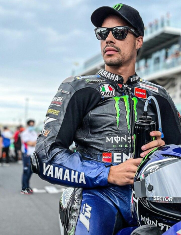

Franco Morbidelli
Franco Morbidelli es un piloto de motociclismo italiano-brasileño que forma parte de la actual parrilla de MOTOGP.

Datos personales
- Fecha de nacimiento: 4 de diciembre de 1994
- Lugar de nacimiento: Roma, Italia
- Altura: 1,76 m
- Peso: 64 kg
- Moto: Ducati
- Dorsal: 21
En 2013 debutó en Moto2 de la mano de Thai Honda PTT Gresini Moto2 y, en 2018, dió el gran salto a la MOTOGP de la mano de EG 0,0 Marc VDS. Actualmente, forma parte del equipo Pertamina Enduro VR46 Racing Team junto al italiano Fabio Di Giannantonio.
Equipos
- Thai Honda PTT Gresini Moto2
- Italtrans Racing Team
- EG 0,0 Marc VDS
- Petronas Yamaha SRT
- Monster Energy Yamaha MotoGP
- Prima Pramac Racing
- Pertamina Enduro VR46 Racing Team
Estadísticas
En 2017 se consagró como campeón mundial de Moto2 con un total de 8 victorias y 21 podios. En MotoGP, acumula un total de 3 victorias (todas ellas en el año 2020) y 6 podios.
| Pts. | Posición | Poles | Victorias | Podios |
|---|---|---|---|---|
| 173 | 9º | 0 | 0 | 0 |